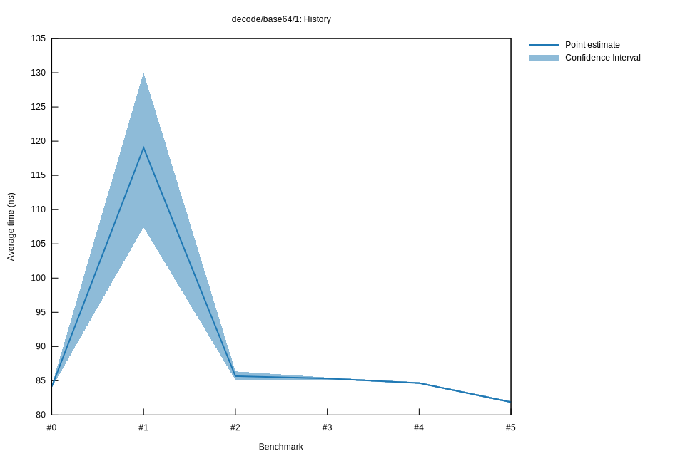

# 52022-10-16T20:15:57+03:00
|
Lower Bound |
Estimate |
Upper Bound |
| Value: |
81.74ns |
81.88ns |
82.04ns |
| Throughput: |
46.67MiB/s |
46.59MiB/s |
46.50MiB/s |
| Change in Value: |
-3.4231% |
-3.2108% |
-2.9665% |
| Change in Throughput: |
+3.5444% |
+3.3173% |
+3.0572% |
No change in performance detected.
# 42022-10-16T17:33:37+03:00
|
Lower Bound |
Estimate |
Upper Bound |
| Value: |
84.54ns |
84.65ns |
84.79ns |
| Throughput: |
45.12MiB/s |
45.06MiB/s |
44.99MiB/s |
| Change in Value: |
-1.1647% |
-0.8248% |
-0.5299% |
| Change in Throughput: |
+1.1784% |
+0.8317% |
+0.5327% |
No change in performance detected.
# 32022-10-15T17:22:58+03:00
|
Lower Bound |
Estimate |
Upper Bound |
| Value: |
85.19ns |
85.33ns |
85.48ns |
| Throughput: |
44.78MiB/s |
44.71MiB/s |
44.63MiB/s |
| Change in Value: |
-1.3714% |
-0.5820% |
+0.1241% |
| Change in Throughput: |
+1.3904% |
+0.5854% |
-0.1239% |
Change within noise threshold.
# 22022-10-15T16:57:05+03:00
|
Lower Bound |
Estimate |
Upper Bound |
| Value: |
85.11ns |
85.67ns |
86.37ns |
| Throughput: |
44.82MiB/s |
44.53MiB/s |
44.17MiB/s |
| Change in Value: |
-18.471% |
-13.260% |
-7.8500% |
| Change in Throughput: |
+22.655% |
+15.287% |
+8.5187% |
No change in performance detected.
# 12022-10-08T17:32:32+03:00
|
Lower Bound |
Estimate |
Upper Bound |
| Value: |
107.45ns |
119.02ns |
130.02ns |
| Throughput: |
35.50MiB/s |
32.05MiB/s |
29.34MiB/s |
| Change in Value: |
+11.099% |
+17.505% |
+25.376% |
| Change in Throughput: |
-9.9899% |
-14.897% |
-20.240% |
No change in performance detected.
# 02022-10-08T17:13:05+03:00
|
Lower Bound |
Estimate |
Upper Bound |
| Value: |
83.99ns |
84.13ns |
84.29ns |
| Throughput: |
45.42MiB/s |
45.34MiB/s |
45.26MiB/s |